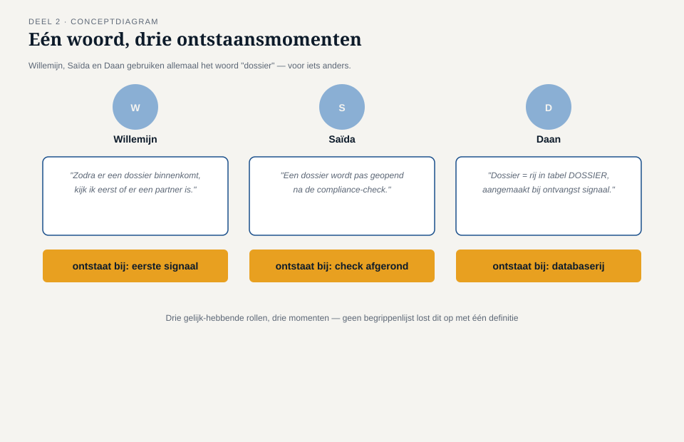
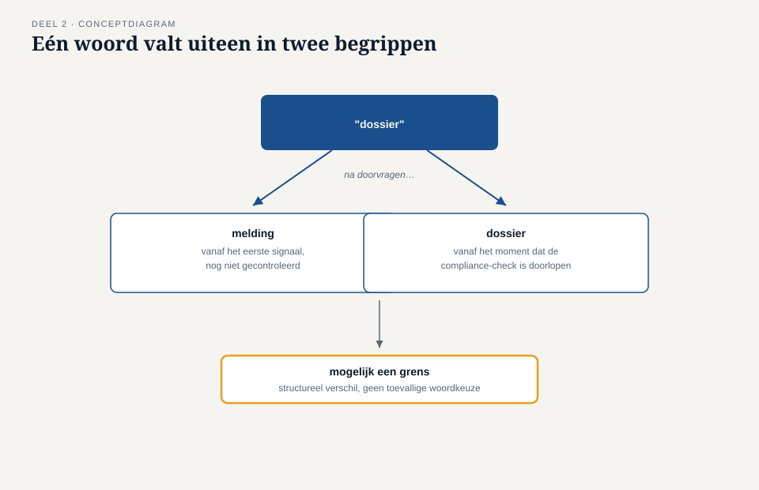

Deel 2 — Ubiquitous language: taal als ontwerpmiddel, niet als glossarium
Reader · Ductus-cursus Domain-Driven Design · niveau 1 (fundament) · deel 2 van 30
2.1 Waar dit deel over gaat
In deel 1 bepaalde het team met de complexiteitstoets welk onderdeel van het Nabestaandenloket de investering van Domain-Driven Design rechtvaardigt: het vaststellen van recht op partnerpensioen bij samenloop van claims. Daarmee is nog niets opgelost — het team ontdekte alleen dát er iets moet gebeuren. Dit deel gaat over het eerste, en volgens sommigen het belangrijkste, instrument van DDD: de taal die het team gaat gebruiken.
Aan het eind van dit deel kun je:
- in eigen woorden uitleggen wat ubiquitous language is en waarom het meer is dan een begrippenlijst;
- laten zien hoe hetzelfde woord in verschillende rollen verschillende dingen kan betekenen, en waarom dat een ontwerpsignaal is;
- met de taalkaart term voor term achterhalen waar begrippen uiteenlopen en waar dat wijst op een verborgen grens;
- uitleggen waarom een taalverschil dat je negeert, later als een technisch defect terugkomt.
2.2 De casus: Merel leest het projectvoorstel terug
Uit het casusdossier: het Nabestaandenloket-team is gevormd, Daan heeft net geleerd dat niet elk onderdeel dezelfde aanpak verdient.
Daan krijgt de opdracht om de eerste gesprekken met Willemijn Brugman uit te schrijven, als voorbereiding op het modelleren van het onderdeel “vaststellen recht op partnerpensioen”. Hij legt zijn aantekeningen naast een e-mail van Saïda Fontein, de compliance-adviseur, over hetzelfde onderwerp.
Willemijn, in het gesprek: “Zodra er een dossier binnenkomt, kijk ik eerst of er een partner is.”
Saïda, in haar e-mail: “Een dossier wordt pas geopend als de compliance-check op de melding is uitgevoerd.”
Daan, in zijn eigen technische aantekeningen: “Dossier = rij in de tabel DOSSIER, aangemaakt bij ontvangst van een BRP-signaal of telefonische melding.”
Drie zinnen, drie momenten waarop volgens de spreker een “dossier” ontstaat: bij binnenkomst van de melding (Willemijn), na een compliance-check (Saïda), of bij het aanmaken van een databaserij (Daan, onbewust vanuit de techniek geredeneerd). Daan belt Tijmen Oosterhuis, de product owner, in de veronderstelling dat hij een klein misverstand moet oplossen.
“Ik denk dat we gewoon moeten afspreken wat een dossier is,” zegt Daan. “Ik zet het in een begrippenlijst en dan weet iedereen het.”
“Dat is niet genoeg,” zegt Tijmen. “Bij WGP 2.0 stond er ook een begrippenlijst, achterin het functioneel ontwerp. Niemand keek er meer naar zodra de bouw begon. Het probleem is niet dat het woord nergens gedefinieerd staat. Het probleem is dat drie mensen, die allemaal gelijk hebben binnen hun eigen rol, drie verschillende dingen bedoelen — en dat wij dat verschil moeten begrijpen voordat we het wegdefiniëren.”
Dat is het onderwerp van dit deel: taal niet vastleggen als opzoekwerk achterin een document, maar gebruiken als instrument om te ontdekken waar het domein zelf grenzen kent die nog niemand had getekend.
2.3 Wat ubiquitous language is
Ubiquitous language — letterlijk: alomtegenwoordige taal — is de taal die domeinexperts en het ontwikkelteam samen spreken over één afgebakend deel van het domein, en die in gesprekken, documentatie én code op dezelfde manier wordt gebruikt.
Drie eigenschappen maken dit meer dan een woordenlijst.
Gedeeld, niet opgelegd. De taal ontstaat in het gesprek tussen Willemijn en het team, niet doordat Daan een lijst opstelt en die rondstuurt. Als Willemijn een woord gebruikt dat niet klopt met wat het team bedoelt, past het team zijn taal aan haar aan — niet andersom. Zij kent het domein; het team leert het.
Gebruikt in de code, niet alleen in gesprekken. Het bijzondere aan ubiquitous language is dat het niet stopt bij de vergaderruimte. Een term die het team met Willemijn afspreekt, hoort letterlijk terug te komen in de namen die Daan in zijn ontwerp en code gebruikt. Zodra de code een ander vocabulaire hanteert dan het gesprek, ontstaat er een vertaalslag — en elke vertaalslag is een plek waar betekenis verloren kan gaan, zoals bij WGP 2.0 gebeurde met het woord “mutatie”.
Begrensd tot één context. Ubiquitous language geldt niet voor de hele organisatie tegelijk. Het is de taal van dít deel van het domein, met dít team, over déze verzameling begrippen. Dat “dossier” bij Nabestaandenzaken iets anders kan betekenen dan bij, bijvoorbeeld, een toekomstig Mutatieplatform, is geen fout die opgelost moet worden — het is een signaal dat er mogelijk twee verschillende afgebakende gebieden bestaan. Dat signaal komt in deel 9 uitgebreid terug, wanneer het team leert wat zo’n gebied — een bounded context — precies is.

Waarom een glossarium niet volstaat
Een glossarium is een statisch document: het legt één betekenis vast en verwacht dat iedereen zich daaraan houdt. Dat werkt voor woorden die werkelijk eenduidig zijn. Het werkt niet voor woorden waarvan de betekenis verschilt per rol, per moment, of per situatie — en juist dat soort woorden zijn de interessante, omdat het verschil zelf iets vertelt over hoe het domein in elkaar zit.
Een glossarium behandelt “dossier” als één ding met één definitie die je erin schrijft en waarmee de discussie gesloten is. Ubiquitous language behandelt het verschil tussen Willemijns “dossier” en Saïda’s “dossier” als een vraag die om onderzoek vraagt: gaat het hier om twee namen voor hetzelfde, of om twee dingen die toevallig dezelfde naam hebben gekregen? Bij WGP 2.0 werd die vraag nooit gesteld. Het woord “mutatie” kreeg één plek in een tabel, en de vijf of zes verschillende dingen die het in de praktijk betekende, werden pas zichtbaar toen de software niet paste op het werk.
2.4 Taal als symptoom van een verborgen grens
De kern van dit deel, en de reden waarom ubiquitous language meer is dan een schrijfvoorschrift: wanneer hetzelfde woord in twee rollen structureel iets anders betekent, en dat verschil niet toevallig of slordig is maar consequent terugkeert, wijst dat vaak op een grens in het domein die nog niet is getekend.
Bij het Nabestaandenloket is dat zichtbaar in het verschil tussen Willemijns “dossier” (het geheel van alles wat met één overlijden te maken heeft, vanaf het moment dat zij ervan hoort) en Saïda’s “dossier” (iets wat pas ontstaat ná een compliance-check — voor haar bestaat er in de tussentijd een “melding”, geen dossier). Dit is geen kwestie van de één die het “goed” heeft en de ander die zich moet aanpassen. Willemijn en Saïda hebben het over twee verschillende fasen van hetzelfde proces, en die twee fasen verdienen mogelijk allebei een eigen naam in het model: een melding die binnenkomt en nog niet gecontroleerd is, en een dossier dat pas ontstaat als de compliance-check is doorlopen.
Dat onderscheid — één woord dat uiteenvalt in twee begrippen zodra je goed doorvraagt — is precies wat een taalkaart aan het licht brengt, en precies wat een begrippenlijst zou hebben toegedekt door simpelweg één definitie te kiezen en de andere te laten vervallen.

2.5 De werkvorm: de taalkaart
Het instrument van dit deel is de taalkaart: een sjabloon om, term voor term, te achterhalen waar begrippen binnen het Nabestaandenloket-domein uiteenlopen tussen rollen of contexten, en waar taal een symptoom is van een verborgen grens.
Het invulblad
Voor een gekozen term (bijvoorbeeld “dossier”, “partner”, “toekenning”) vul je in:
De term. Eén woord of korte uitdrukking die in meerdere gesprekken terugkomt.
Wie het gebruikt, en wat zij ermee bedoelen. Per rol een korte, letterlijke omschrijving — geen samenvatting, maar zo dicht mogelijk bij hoe de persoon het zelf zegt. Bij twijfel: citeer.
Op welk moment het begrip ontstaat, volgens die rol. Dit veld is vaak verhelderender dan een definitie op zich: twee mensen kunnen hetzelfde woord gebruiken voor dingen die op compleet verschillende momenten beginnen te bestaan, zoals Willemijns en Saïda’s “dossier”.
Is het verschil toevallig of structureel? Toevallig: iemand gebruikt het woord even losjes, en bij doorvragen blijkt iedereen het uiteindelijk over hetzelfde te hebben. Structureel: het verschil blijft bestaan, hoe vaak je ook doorvraagt, omdat de rollen het echt over iets anders hebben. Alleen structurele verschillen zijn een signaal voor een mogelijke grens.
Voorlopige conclusie. Eén term met één betekenis, of twee (of meer) termen die uit elkaar getrokken moeten worden? Zo ja: welke namen krijgen ze?
Het veld dat het verschil maakt
Onder deze velden staat een afsluitend veld:
Dat het verschil maakt: als we dit verschil nu negeren en met één woord verder werken, waar in het latere ontwerp loopt dat vast — en wie merkt het als eerste?
Dit veld dwingt het team van een taalkundige constatering naar een ontwerpconsequentie. “Dossier betekent voor Willemijn en Saïda iets anders” is een observatie; “als we één ‘dossier’-object bouwen, kan Saïda’s compliance-check niet meer los worden vastgelegd van Willemijns eerste intake, en dan kan zij achteraf niet aantonen wanneer de controle heeft plaatsgevonden” is een inzicht dat een ontwerpbeslissing rechtvaardigt.
Vul dit veld altijd toe naar een concrete situatie uit het casusdossier of uit een eigen gesprek, nooit naar een algemene formulering als “dat leidt tot verwarring”.

2.6 Terug naar de casus
Het team vult de taalkaart in voor “dossier” en ontdekt, zoals paragraaf 2.4 beschrijft, dat het woord in twee begrippen uiteenvalt: een melding (vanaf het eerste signaal, nog niet gecontroleerd) en een dossier (vanaf het moment dat de compliance-check is doorlopen). Willemijn is aanvankelijk verrast — “voor mij was dat altijd gewoon hetzelfde ding, alleen in een andere fase” — maar erkent bij het veld “dat het verschil maakt” meteen de consequentie: “Als we dat niet apart vastleggen, kan ik straks niet meer aantonen wanneer we precies wisten dat het compliance-technisch in orde was. En dat is exact waar Saïda naar vraagt als er ooit bezwaar komt.”
Rutger Zeeman, aanvankelijk sceptisch (“weer een sjabloon, net als vorige week”), test de taalkaart op een tweede term: “partner”. Daar blijkt het verschil juist toevallig — Willemijn, Saïda en Daan bedoelen, na doorvragen, uiteindelijk hetzelfde begrip (“een persoon die volgens het reglement recht geeft op partnerpensioen”), ze formuleren het alleen anders. Rutger concludeert: “Dus niet elk woord waarover we discussiëren is meteen een verborgen grens. Dat scheelt, anders wordt dit een eindeloze exercitie.” Dat onderscheid — structureel versus toevallig — is precies wat de taalkaart moet opleveren, en precies wat het team behoedt voor het andere uiterste: overal een nieuw begrip zien waar geen is.
Daan trekt de conclusie die hem bij Tijmen terugbrengt: een begrippenlijst zou het verschil tussen “melding” en “dossier” hebben weggedefinieerd door één van de twee betekenissen te kiezen. De taalkaart maakte zichtbaar dát er twee dingen waren, en dat inzicht — niet de definitie zelf — is wat het team meeneemt naar de rest van niveau 1.
Vooruit naar deel 3. Het team heeft nu twee scherpe begrippen: “melding” en “dossier”. Maar er is meer materiaal in het Nabestaandenloket dat om aandacht vraagt dan het team in één keer aankan — de correspondentie-adressen, de documentopslag, de samenloopberekening met het UWV. Voordat het team dieper op één onderdeel ingaat, moet eerst worden vastgesteld welk deel van het domein de kern van de zaak is en welk deel er ondersteunend of generiek omheen zit. Dat is het onderwerp van deel 3.